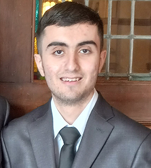

Antonio is a Visual Communication Design major in his second year at SFSU. He is the youngest in his family and has been taught to always study hard and give his best effort when possible. He has lived in the Bay Area for his entire life and gained an interest in the Visual Communication Design field by taking a Photoshop class in high school. He is fascinated by the many different kinds of visuals we see in our day to day lives and enjoys learning about the creation and meanings of these visuals. Antonio believes that Visual designers are often under appreciated for the impact that they have on our everyday lives. Antonio actually was not a huge fan of coding and web design due to his past experience with taking coding classes he didn’t enjoy. But after taking a web design class with new knowledge, he has gained an appreciation for the construction of all the different websites we use today.
In his spare time, Antonio enjoys playing video games along with talking about various aspects of game design. He grew up mainly playing games on different Nintendo consoles but now plays a lot of PC games. He has made it his goal in 2026 to clear his backlog and play games that he has had interest in for a while. He also enjoys reading anime and manga for the ways they are able to combine text and visuals to tell unique stories. The various artists and creators of his favorite games and stories influence his visual design style. Additionally, Antonio enjoys keeping up with baseball, rooting for the Dodgers despite living in the Bay Area his whole life. He says it's because his dad moved to Los Angeles from Mexico due to being a fan of the Dodgers, so he takes appreciation in baseball for being the reason his parents moved to the US.